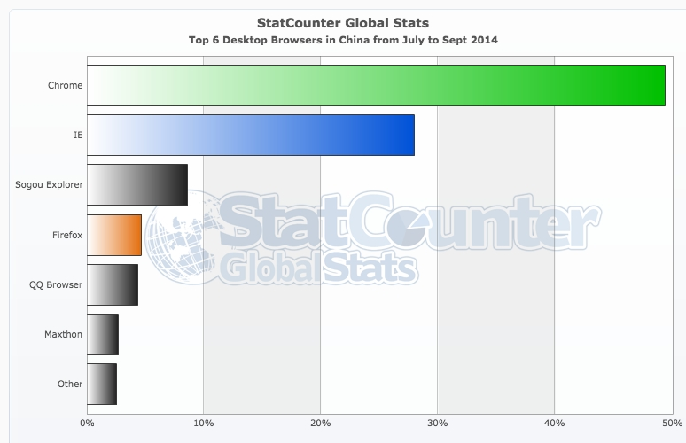
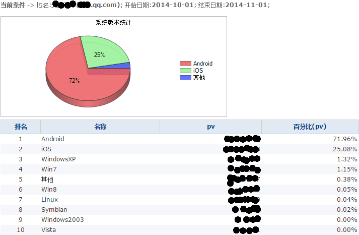
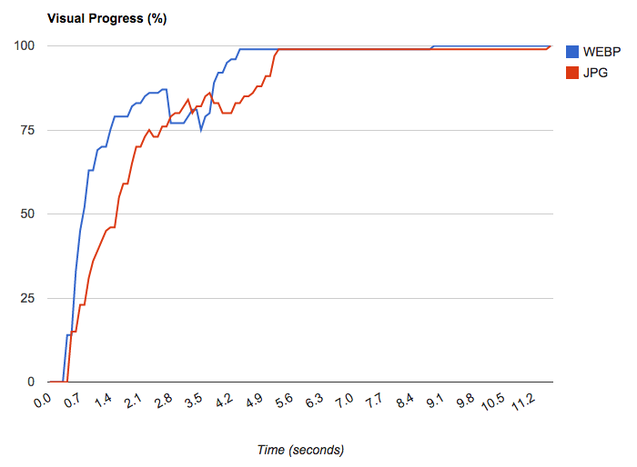
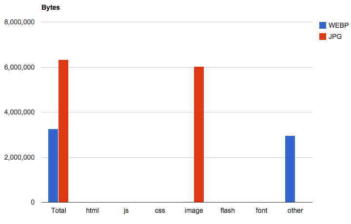

WebP
About Me
老黄、LV、驴哥、小悠
码农（8年。Html、Css、Js、NodeJs、C#、Java、Swift...）
搜狐MDC、百度知道、腾讯ISUX、腾讯ECD
@腾讯互娱/TGIdeas创意设计中心
Agenda
是什么?
一种新的图片格式
2011年 Google
无损压缩（同质PNG，尺寸小25%）
有损压缩（同质JPG，尺寸小25~34%）
更吊的图像编码技术
- Fancy采样算法
- 区域智能压缩
- 预测编码技术
谁在用?
Chrome Webstore
全站应用webp
QZone
部分应用：大背景、动态里面的照片
淘宝&天猫
部分应用：列表页

兼容性?
各主流浏览器实际支持情况
| OS\BROWSER | UC浏览器(9.0+) | QQ浏览器(5.0+) | Chrome浏览器(36.0+) | Android内置浏览器(4.0+) | 微信内置webview | QQ内置webview |
|---|---|---|---|---|---|---|
| IOS | 否 | 否 | 是 | N/A | 否 | 否 |
| Android | 是 | 是 | 是 | 是 | 否 | 否 |
兼容性结论
从设备\操作系统\浏览器的角度看，兼容性达50%
那么问题来了?
到底用还是不用呢
这是一个没有标准答案的问题
但，有一些数据和建议可以参考
国内桌面浏览器上一季度市场份额
Chrome浏览器49%+，对webp兼容良好
国内移动端浏览器上一季度市场份额
UC浏览器+Chrome浏览器市场份额接近70%，对webp兼容良好
天天飞车官网上个月 - 操作系统市场份额
Android系统的访问量超过70%
说明什么问题？
-
如果用webp，大约50%用户受益，当然另外50%用户需要兼顾处理
- 如果图片大小占据页面大小一半或以上，【建议用！】
- 客户端软件，内嵌了基于Chromium的webview，【必须用！】
- 客户端软件，如果使用node-webkit开发，【必须用！】
那么问题又来了?
如何兼顾不支持webp的浏览器?
按需加载，优雅降级


- img标签使用1px的透明gif做填充图片
- 利用data-src放普通图片
- 利用data-webp放webp图片
- 利用js判断浏览器是否支持webp，从而选择合适的图片格式
如何判断浏览器是否支持webp？
var img = new Image();
img.src = "data:image/webp;base64,UklGRjoAAABXRUJQVlA4IC4AAACyAgCdASoCAAIALmk0mk0iIiIiIgBoSygABc6WWgAA/veff/0PP8bA//LwYAAA";
img.onload = img.onerror = function() {
if(img.width === 2 && img.height === 2){
//支持webp
}else{
//不支持webp
};
};
按需加载的优缺点
- 优点：特别适用于内容图较多较大的页面，可以让大约50%的用户显著提升图片加载速度，较少流量消耗
- 缺点：需要为按需加载的图片准备一套webp格式的
银弹？

WebPJS
借助FLASH兼容不支持webp的浏览器
下载所需文件-webpjs.appspot.com
在页头引入JS
WebPJS的优缺点
- 借助flash让所有浏览器兼容webp
- 只需要一套webp图片
- 需要引入额外的2个文件，共计100+KB...
- 利用flash在客户端进行解码，渲染性能有点渣
WebPJS并不是银弹
舍本求末,Google出品不一定是精品
小结
- webp的优点和应用情况
- webp的兼容性
- 如何在网页中按需加载webp图片
- 如何让所有浏览器兼容webp - WebPJS
结束了
么？
聊聊webp的性能
编码(Encode)和解码(Decode)速度
- 编码速度比JPG慢大约10倍
- 解码速度比JPG慢大约1.4倍
数据参考自:Faster, smaller and more beautiful web with WebP
解码慢1.4倍,对页面渲染影响大否?
渲染速度测试 - PC端
渲染速度测试 - PC端
尺寸对比测试
说明什么问题?
- 尽管webp解码速度比JPG慢1.4陪,但实际渲染速度不慢
One more thing
3个小工具
1. grunt-webp
一个将普通图片转换成webp图片的nodejs包
一个命令
grunt webp
蜀黍
有没有GUI工具啊
2. 智图(zhitu)
来自腾讯ISUX前端团队的图片优化平台:zhitu.tencent.com
薯薯
有没有按需加载webp图片滴JS组件啊
3. LazyPic.JS
一个支持webp图片的延迟加载组件
半行代码
new LazyPic();
THE END
BY LV / Faso.me
参考资料
“WebPJS - Google's new image format WebP for not supported browsers (with alpha-channel)”
“Script to feature detect if browser support WebP.”
“grunt-webp”
“LazyPic.JS”
“智图(zhitu)”
“渲染速度对比测试(webpagetest.org)”
“渲染速度对比测试-手机端(webpagetest.org)”